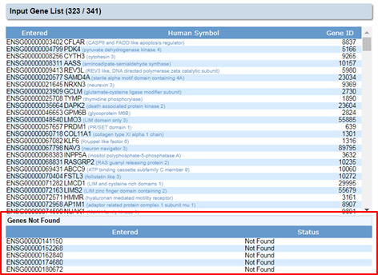
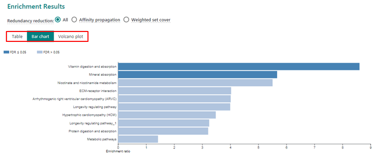
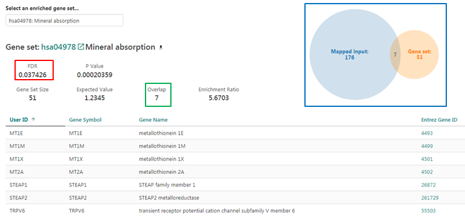
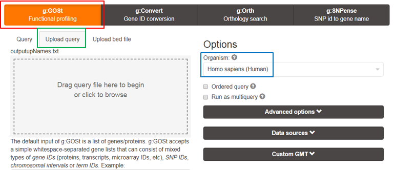
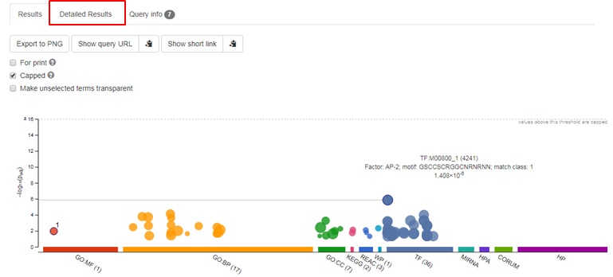
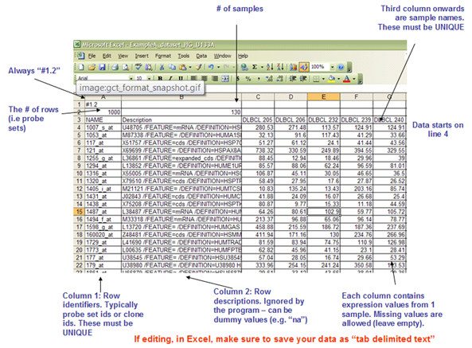
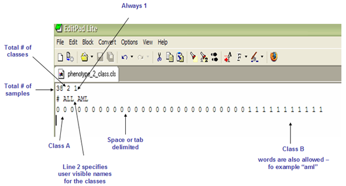
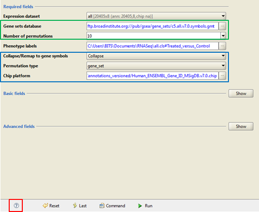
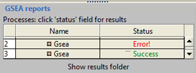

Functional enrichment analysis
question Questionsobjectives Objectives
time Time estimation: 120 minutes
Supporting Materials
What’s the biology behind a list of genes ?
Omics experiments typically generate lists of hundreds of interesting genes:
- up- or downregulated genes identified in an RNA-Seq experiment
- somatically mutated genes in a tumor identified by exome sequencing
- proteins that interact with a bait identified in a proteomics experiment
- …
Over-representation analysis
Since it’s impossible to evaluate each gene individually, the most meaningful approach is to see what functional annotations the genes in the list have in common e.g. are many of them involved in the same pathway ?
Functional characterization of a gene list involves the following steps:
- Add functional annotations to the genes in the list
- Define a background: typically the full set of all genes in the genome
- Perform a statistical test to identify enriched functions, diseases, pathways
Enriched means over-represented, occurring more frequently in the list than expected by chance based on the background data.
It is recommended to characterize up- and downregulated genes separately.
!! Thousands of pathways are tested for enrichment, this could lead to false positives. Multiple testing correction is used to correct the p-values from the individual enrichment tests to reduce the chance of false positives !!
ToppGene: most up-to-date but only human, mouse and rat
ToppGene is the most up-to-date portal for gene list functional enrichment. See this overview of their resources of functional annotations and their last update date.
The ToppFun tool returns enriched terms from GO, phenotypes, pathways, protein interactions, domains, transcription factor binding sites, miRNA-target genes, disease associations, drug-gene interactions compiled from various data sources…
It supports gene symbols, Ensembl, Entrez, RefSeq and UniProt IDs from human. However, since gene symbols for human, mouse and rat are identical the tool can also be used for mouse and rat.
hands_on Exercise ToppGene
How to do functional enrichment analysis with ToppFun ?
solution answer
- On the ToppGene page click the first link ToppFun: Transcriptome, ontology, phenotype, proteome…
- Enter gene symbols or Ensembl IDs in the box Training Gene Set
- Click Submit Query
- If the gene list contains non-approved symbols or duplicates, they are listed under Genes Not found.

- In the section Calculations select the functional annotation types you want to test (all in our case) and select the multiple correction method (default FDR is ok) and the significance cut-off level (default 0.05 is ok)
- Click Start
- Input Parameters summarizes the input parameters of the search. Click the Show Detail (red) link to see them.
- Training results contains the enrichment analysis results. Download all (blue) will download the analysis results as a text file.
- Click the Display chart (green) link to visualize the results
- If you want to see which genes from your list belong to a certain annotation click the number in the Genes from innput column

Enrichr: longest list of resources but not so up-to-date
Enrichr use a respectable number of resources to compute enrichment but they are not as regularly updated as those of ToppGene. To learn more about Enrich, see their FAQ page.
Enrichr uses a list of gene symbols as input (one per line). It only supports human, mouse and rat. You can upload the list by selecting a text file or by simply pasting the list of gene symbols into the text box.
hands_on Exercise 1 Enrichr
How to perform functional enrichment analysis in Enrichr ?
Browse to Enrichr submission page and click the Submit button
The results page consists of multiple tabs, each tab giving an overview of a specific type of annotation (Transcription, Pathways, Ontologies…), e.g.
hands_on Exercise 2 Enrichr
How to visualize the results for KEGG pathways as a bar chart ?
solution answer
Go to the Pathways tab and expand the results for KEGG as a bar chart.
The bar charts are interactive: hover your mouse over the bars to see the enrichment scores. Clicking the bars will order the terms according to different scores.
The length of the bar represents the significance of that specific term. In addition, the brighter the color, the more significant that term is.
Enrichr implements three approaches to compute enrichment scores:
- The p-value comes from a test implemented in most enrichment analysis tools: the hypergeometric test
- The q-score is the adjusted p-value using the Benjamini-Hochberg method for correction for multiple hypotheses testing.
- EnrichR computes enrichment using the hypergeometric test for many random gene sets to compute mean and standard deviation of the expected rank for each annotation. Then it computes an odds ratio reflecting the deviation of the actual rank from this expected rank.
- They combine the p-value of the hypergeometric test with the odds ratio into a combined score
hands_on Exercise 3 Enrichr
How to obtain the table containing the actual scores ? Sort the terms according to adjusted p-value
solution answer
- If you want to see the actual scores click the Table tab
- Click the name of the column you want to use for sorting
hands_on Exercise 4 Enrichr
Look at the results for GO Biological processes, OMIM disease, and TargetScan miRNAs
hands_on Exercise 5 Enrichr
How to visualize enriched Transfac and Jaspar TFBS as a network ?
solution answer
- Go to the Transcription tab and click TRANSFAC and JASPAR PWMs
- Visualize the results as a network by clicking then Network tab
Each node in the network represents a term (in this case a Transcription Factor) and a link between two nodes means that the 2 transcription factors have some genes from the list in common. the genes are linked to both transcription factors. Since these transcription factors share target genes from the list they might interact to regulate the process you’re studying.
Webgestalt: all organisms but one resource at a time
This tool largely overlaps in data-sources with Enrichr but updates them more regularly.
WebGestalt accepts many ID types and supports 12 different model organisms. For other organisms it allows to upload your own functional annotation database (see section 3.1 of the manual of this tool).
hands_on Exercise 1 WebGestalt
How to calculate enrichment of KEGG pathways in a list of genes ?
solution answer
- In the Organism box select the correct organism
- In the Method box select Over-Representation Analysis
- In the Functional Database boxes select pathway and KEGG
- In the Gene ID type box select the correct ID type
- Upload the list of IDs
- In the Select Reference Set box select the correct background, for lists generated by RNA-Seq experiments genome, protein-coding is a good choice because that is what you have measured
- Click the Submit button
The Enrichment results can be visualized as a table, a bar chart or a Volcano plot. Dark blue bars are considered significantly enriched.

Clicking a bar shows the details on the bottom half of the page:
- FDR is the corrected p-value (blue) -Mapped input represents your gene list
- gene set is the total group of genes in the genome with this annotation
- overlap is the number of genes from your list with this annotation. They are listed in the table.

hands_on Exercise 2 WebGestalt
Repeat the enrichment analysis on Wiki pathways
Again, many more tables can be generated in WebGestalt and you should choose the type of enrichment that fits your experimental needs. Data can be saved back to disk for further use.
g:Profiler: many organisms but limited resources
g:Profiler supports a long list of organisms but has less resources than the other tools since it retrieves functional annotations from Ensembl representing GO terms, pathways, networks, regulatory motifs, and disease phenotypes.
It is very regularly updated.
hands_on Exercise 1 g:Profiler
How to calculate enrichment in a list of genes ?
solution answer
- For Enrichment analysis you need to use the g:GOSt tool.
- Upload query: a file with gene IDs (in this example Ensembl IDs - one per line).
- In the Functional Database boxes select pathway and KEGG
- In the Gene ID type box select the correct ID type
- Select the Organism you need
- Click the Run query button

This tool produces visually attractive results. Every dot in the graph represents a functional annotation. Hover your mouse over a dot to show details like the name of the annotation and the corrected p-value.

Also the detailed results are very visual.
Gene set enrichment analysis
Some omics experiments generate a ranked list of genes:
- genes ranked by differential expression score from a RNA-Seq experiment
- genes ranked by sensitivity in a genome-wide CRISPR screen
- mutated genes ranked by a score from a cancer driver prediction method
- …
To analyze these lists, the following steps are taken
- The genes are divided into groups based on functional annotation (gene sets)
- For every group enrichment of high or low scores is calculated
Groups of related genes are called gene sets: a pathway gene set includes all genes in a pathway.
This is why this type of analysis is called GSEA, Gene Set Enrichment Analysis. It assumes a whole-genome ranked list as input.
GSEA
GSEA is most often done in R or via software that you install on your computer like GSEA from the Broad Institute.
GSEA is recommended when ranks are available for all or most of the genes in the genome (e.g. RNA-Seq data). It is not suitable when only a small portion of genes have ranks available (e.g. an experiment that identifies mutated cancer genes).
You have to install the tool on your computer. An icon will appear on your desktop.
Input files
The format of the input file is very important. It should be a tab-delimited text file where:
- column 1 should contain gene IDs
- column 2 should contain descriptions but may be NAs
- next columns should contain normalized counts (one column/sample)
Columns must have headers:
- NAME for column 1
- Description for column 2
- Sample names for the next columns
The first line of the file should be: #1.2 The second line should be: number_of_genes tab number_of_samples

Save the file as .gct !
Apart from these data you also need a .cls file with the metadata (grouping info of the samples). This is a space delimited text file:
- line 1: number_of_samples space number_of_groups space 1
- line 2: # space class0_name space class1_name
- line 3: for every sample 0 or 1 separated by spaces

Analysis
Originally GSEA was created to analyze microarray results but you can use it for analyzing RNA-Seq data, albeit with some tweaking of the parameter settings.
hands_on Exercise 1 GSEA
How to perform GSEA on a full list of genes with normalized counts ?
solution answer
- Load the data into GSEA. Load both the .gct and the .cls file.
- Run GSEA: fill in the parameter settings. Click the question mark (red) on the bottom of the page to view descriptions of these parameters.
- Use the GO: all (green) gene set
- Use 10 permutations (green). If all goes well, repeat the analysis with 1000 permutations.
- Select Collapse (blue): this is necessary for RNA-Seq data to associate the gene IDs of your list to the probes of the chip platform
- Use gene set permutations (blue). Broad advises phenotype permutations (group labels will be shuffled to create random data to compare with) but they will only work when you have at least 7 samples per group.
- Choose Human_ENSEMBL_Gene_ID_MSigDB.vX.chip as ChIP Platform (blue). Although you didn’t actually do chips (microarrays) he needs to map the Ensembl Gene IDs in the data file to functional annotations.
- Click the Run button at the bottom of the page.
 In the left lower corner of the user interface there’s a section called GSEA reports. It shows the status of analyses run in this session, including the currently running analysis:
 Click the green text to display the results in a browser. {: .solution)
Resources of functional annotation
Functional annotations can be very diverse: molecular functions, pathways (genes that work together to carry out a biological process), interactions, gene regulation, involvement in disease…
Online enrichment analysis tools often have functional annotation built-in for a limited set of organisms but some tools like WebGestallt also allow to upload your own annotation.
Pathguide contains info about hundreds of pathway and molecular interaction related resources. It allows organism-based searches to find resources that contain functional info on the organism you work on.
Gene sets based on GO, pathways,omics studies, sequence motifs, chromosomal position, oncogenic and immunological expression signatures, and various computational analyses maintained by the GSEA team of MSigDB. The GSEA tool from Broad will use this database by default.
Choosing the right background
Functional enrichment methods require the definition of background genes for comparison. All annotated protein-coding genes are often used as default. This leads to false-positive results if the experiment measured only a subset of all genes. For example, setting a custom background is important in analyzing data from targeted sequencing or phosphoproteomics experiments. The appropriate custom background in this example would include all genes in the sequencing panel or all known or all phosphoproteins.
keypoints Key points